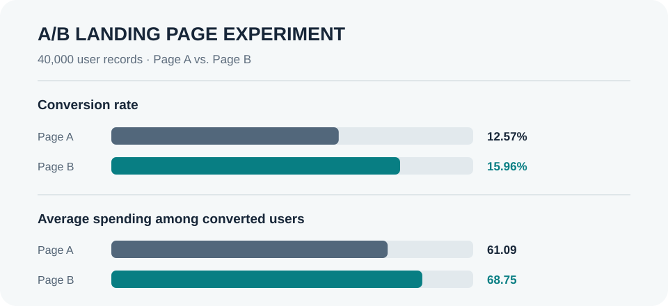

A/B Landing Page — Experiment Analysis
Landing Page Conversion and Spending Experiment
Evaluated two landing page versions across 40,000 users, comparing conversion and average spending and testing associations with traffic source and user type.
Business questions
- Which landing page generates a higher conversion rate and higher average spending?
- Which traffic sources show higher conversion rates?
- Are there differences in conversion by user type?
- What business actions are supported by the experiment results?
Dataset and comparison
The dataset contains 40,000 observations and 9 variables. Each record represents a unique user; the dataset has no missing values. Variables include landing page version, region, device, traffic source, user type, conversion indicator and spending.

| Metric | Page A | Page B | Interpretation |
|---|---|---|---|
| Conversion rate | 12.57% | 15.96% | +3.38 percentage points for Page B; statistically significant. |
| Average spending among converted users | 61.09 | 68.75 | Approximately 12.5% higher for Page B; statistically significant. |
Additional conversion analysis
| Dimension | Observed rates | Statistical interpretation |
|---|---|---|
| Traffic source | Email 14.99%; Ads 14.74%; Referral 13.88%; Organic 13.79%. | Chi-square test found a statistically significant association, but Cramér's V ≈ 0.015 indicates a very weak relationship. |
| User type | New users 14.36%; Returning users 14.09%. | No statistically significant association was found between user type and conversion. |
Methodology and statistical tests
- Data validation and exploratory analysis.
- Levene's test to assess equality of variances.
- Welch's t-test to compare average spending among converted users on pages A and B.
- Two-proportion Z-test to compare conversion rates.
- Chi-square tests of independence to test associations between traffic source or user type and conversion.
- Cramér's V to measure the strength of the traffic-source association.
Business recommendations
- Prioritize Page B as the candidate version for implementation, based on its higher conversion and average spending in this experiment.
- Do not reallocate acquisition resources based only on traffic-source conversion rates, since the observed association is very weak.
- Do not prioritize different conversion strategies for new and returning users based on this experiment alone.
- Analyze traffic source and user type separately within each page version to check whether aggregate patterns remain stable and reduce the risk of Simpson's paradox.
- Complement the implementation decision with profitability and cost metrics.
Tools and reproducibility
Python · pandas · NumPy · Matplotlib · SciPy · statsmodels · Jupyter Notebook. The dataset is included in the repository and the notebook uses relative paths, structured to execute from top to bottom.
Statistical significance does not by itself establish business impact or profitability. Average spending is calculated among converted users. Traffic source had a statistically significant but very weak association with conversion; user type did not show a statistically significant association. Further within-page analysis is recommended before drawing conclusions about subgroup patterns.